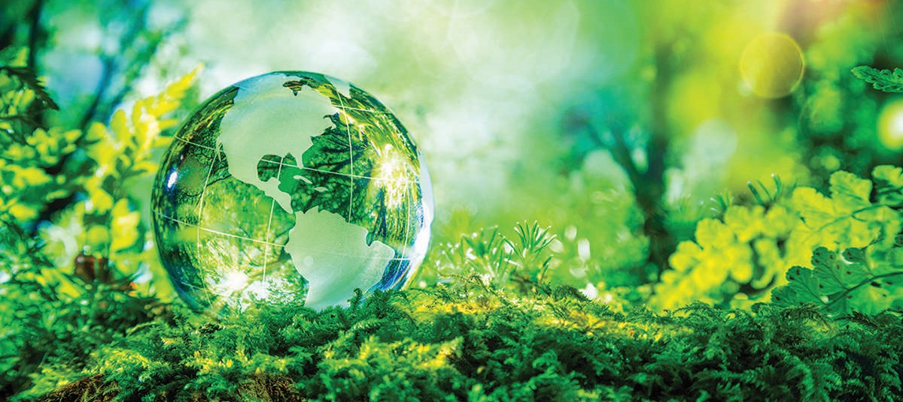
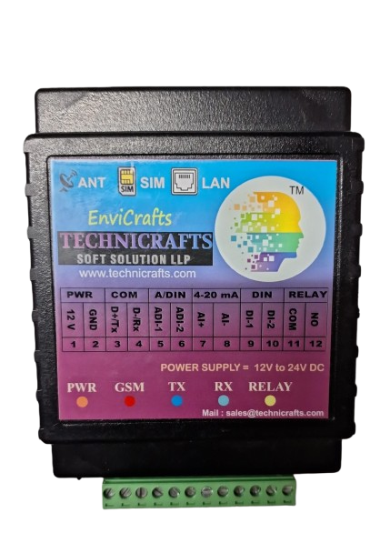

Enhancing Agua Instruments with Advanced Data Solutions
At Agua Instruments Pvt. Ltd., we are committed to delivering excellence in environmental monitoring, fortified by our strategic partnership with Technicrafts Soft Solutions LLP. Technicrafts is renowned for its technical expertise and innovative data logging solutions, enabling real-time insights for clients across industries.
Technicrafts’ Datalogger Services include:
- Accurate Data Acquisition: Real-time recording of critical parameters from analyzers, sensors, and controllers.
- Regulatory Compliance: Built to meet stringent environmental standards, including OCEMS requirements.
- Reliable Connectivity: Seamless integration with IoT platforms and remote monitoring systems.
- Customizability: Tailored solutions for industries like STPs, WTPs, and CETPs.
With Technicrafts’ dataloggers, Agua Instruments provides a comprehensive environmental monitoring solution for enhanced data analysis and decision-making.

In collaboration with Technicrafts, we present Envicrafts, a cutting-edge data monitoring dashboard that delivers superior functionality:
- Real-Time Insights: View live data from your monitoring systems at a glance.
- Interactive Visualization: Easily interpret data with graphs, charts, and alerts.
- Custom Reports: Generate reports for regulatory submissions or internal use.
- Seamless Integration: Compatible with Technicrafts’ dataloggers and our instruments.
- Accessibility: Access the dashboard from any device, enabling remote monitoring.
By combining Agua Instruments’ advanced analytical technologies with Technicrafts’ datalogger services and the Envicrafts dashboard, we offer our clients an unparalleled environmental monitoring experience. This collaboration empowers industries to optimize processes, ensure compliance, and contribute to a more sustainable future.